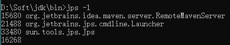

<!DOCTYPE html>


<html lang="en">


<head>
  <meta charset="utf-8" />
   
  <meta name="keywords" content="学习" />
   
  <meta name="description" content="G.zero的个人博客" />
  
  <meta name="viewport" content="width=device-width, initial-scale=1, maximum-scale=1" />
  <title>
    java 性能监控与故障处理工具 |  yang-blog
  </title>
  <meta name="generator" content="hexo-theme-ayer">
  
  <link rel="shortcut icon" href="/favicon.ico" />
  
  
<link rel="stylesheet" href="/dist/main.css">

  
<link rel="stylesheet" href="https://cdn.jsdelivr.net/gh/Shen-Yu/cdn/css/remixicon.min.css">

  
<link rel="stylesheet" href="/css/custom.css">

  
  
<script src="https://cdn.jsdelivr.net/npm/pace-js@1.0.2/pace.min.js"></script>

  
  

  

</head>

</html>

<body>
  <div id="app">
    
      
    <main class="content on">
      <section class="outer">
  <article
  id="post-jvm/java-jvm-monitor"
  class="article article-type-post"
  itemscope
  itemprop="blogPost"
  data-scroll-reveal
>
  <div class="article-inner">
    
    <header class="article-header">
       
<h1 class="article-title sea-center" style="border-left:0" itemprop="name">
  java 性能监控与故障处理工具
</h1>
 

    </header>
     
    <div class="article-meta">
      <a href="/2019/05/28/jvm/java-jvm-monitor/" class="article-date">
  <time datetime="2019-05-28T09:44:35.000Z" itemprop="datePublished">2019-05-28</time>
</a> 
  <div class="article-category">
    <a class="article-category-link" href="/categories/JAVA-JVM/">JAVA_JVM</a>
  </div>
  
<div class="word_count">
    <span class="post-time">
        <span class="post-meta-item-icon">
            <i class="ri-quill-pen-line"></i>
            <span class="post-meta-item-text"> Word count:</span>
            <span class="post-count">1.2k</span>
        </span>
    </span>

    <span class="post-time">
        &nbsp; | &nbsp;
        <span class="post-meta-item-icon">
            <i class="ri-book-open-line"></i>
            <span class="post-meta-item-text"> Reading time≈</span>
            <span class="post-count">4 min</span>
        </span>
    </span>
</div>
 
    </div>
      
    <div class="tocbot"></div>


  
    <div class="article-entry" itemprop="articleBody">
       
  <h2 id="1-JDK命令工具"><a href="#1-JDK命令工具" class="headerlink" title="1.JDK命令工具"></a>1.JDK命令工具</h2><table>
<thead>
<tr>
<th align="left">名称</th>
<th align="left">主要作用</th>
</tr>
</thead>
<tbody><tr>
<td align="left">jps</td>
<td align="left">JVM Process Status Tool,显示指定系统内所有的HotSpot虚拟机进程</td>
</tr>
<tr>
<td align="left">jstat</td>
<td align="left">JVM Statistics Monitoring Tool,用于收集HotSpot虚拟机各方面的运行数据</td>
</tr>
<tr>
<td align="left">jinfo</td>
<td align="left">Configuration Info For Java ,显示虚拟机配置信息</td>
</tr>
<tr>
<td align="left">jmap</td>
<td align="left">Memory Map For Java,生成虚拟机的内存转储快照</td>
</tr>
<tr>
<td align="left">jhat</td>
<td align="left">JVM Heap Dump Browser,用于分析heapdump文件，它会建立一个Http/HTML服务器，让用户可以在浏览器上查看分析结果</td>
</tr>
<tr>
<td align="left">jstack</td>
<td align="left">Stack Trace For Java 显示虚拟机的线程快照</td>
</tr>
</tbody></table>
<h3 id="1-1-jps-虚拟机进程状态工具"><a href="#1-1-jps-虚拟机进程状态工具" class="headerlink" title="1.1 jps:虚拟机进程状态工具"></a>1.1 jps:虚拟机进程状态工具</h3><p>jps列出正在运行的虚拟机进行，并显示虚拟机执行主类名称以及这些进程的本地虚拟机唯一ID。</p>
<p>jps命令:</p>
<figure class="highlight plain"><table><tr><td class="gutter"><pre><span class="line">1</span><br></pre></td><td class="code"><pre><span class="line">jps [option] [hostid]</span><br></pre></td></tr></table></figure>

<p>jps执行样例:<br></p>
<table>
<thead>
<tr>
<th align="left">选项</th>
<th align="left">作用</th>
</tr>
</thead>
<tbody><tr>
<td align="left">-q</td>
<td align="left">只输出LVMID，省略主类的名称</td>
</tr>
<tr>
<td align="left">-m</td>
<td align="left">输出虚拟机进程启动是传递给主类main()函数的参数</td>
</tr>
<tr>
<td align="left">-l</td>
<td align="left">输出主类的全名，如果进程执行的是jar包，输出jar路径</td>
</tr>
<tr>
<td align="left">-v</td>
<td align="left">输出虚拟机进程启动时JVM参数</td>
</tr>
</tbody></table>
<h3 id="1-2-jstat-虚拟机统计信息监视工具"><a href="#1-2-jstat-虚拟机统计信息监视工具" class="headerlink" title="1.2 jstat:虚拟机统计信息监视工具"></a>1.2 jstat:虚拟机统计信息监视工具</h3><p>jstat监视虚拟机各种运行状态信息的命令行工具。可以显示本地或者远程虚拟机进程中的类装载、内存、垃圾收集、JIT编译等运行数据。</p>
<p>jstat命令格式</p>
<figure class="highlight plain"><table><tr><td class="gutter"><pre><span class="line">1</span><br></pre></td><td class="code"><pre><span class="line">jstat [option vmid [interval[s|ms][count]]]</span><br></pre></td></tr></table></figure>
<p>vmid:<br>本地：与本地VMID一致。<br>远程：格式如下<br>[protocol:][//]lvmid[@hostname[:port]/servername]</p>
<p>interval:查询间隔。<br>count：次数。</p>
<p>如果省略两个参数，说明只查询一次。</p>
<figure class="highlight plain"><table><tr><td class="gutter"><pre><span class="line">1</span><br><span class="line">2</span><br></pre></td><td class="code"><pre><span class="line">每250秒查询一次进行2777垃圾收集状况，一次查询20次</span><br><span class="line">jstat -gc 2777 250 20</span><br></pre></td></tr></table></figure>

<p>option:查询虚拟机信息，分为3类：类装载、垃圾收集、运行编译状况</p>
<table>
<thead>
<tr>
<th>选项</th>
<th>作用</th>
</tr>
</thead>
<tbody><tr>
<td>-class</td>
<td>监视类装载。卸载数量、总空间以及类装载所消耗的时间</td>
</tr>
<tr>
<td>-gc</td>
<td>监视java堆状况，包括Eden区、两个Survivor区、老年代、永久代等容量、已用空间、GC时间合计等信息</td>
</tr>
<tr>
<td>-gccapacity</td>
<td>监视内容与-gc基本相同，但是输出主要关注java堆各个区域使用的最大、最小空间</td>
</tr>
<tr>
<td>-gcutil</td>
<td>监视内容与-gc基本相同，但是输出主要关注已使用的空间占总空间的百分比</td>
</tr>
<tr>
<td>-gccause</td>
<td>与-gcutil功能一样，但是会额外输出导致上一次GC产生的原因</td>
</tr>
<tr>
<td>-gcnew</td>
<td>监视新生代GC状况</td>
</tr>
<tr>
<td>-gcnewcapacity</td>
<td>监视内容与-gcnew基本相同，输出主要关注使用到的最大、最小空间</td>
</tr>
<tr>
<td>-gcold</td>
<td>监视老年代GC状况</td>
</tr>
<tr>
<td>-gcoldcapacity</td>
<td>监视内容与-gcold相同，输出主要关注使用到的最大、最小空间</td>
</tr>
<tr>
<td>-gcpermcapacity</td>
<td>输出永久代使用到的最大、最小空间</td>
</tr>
<tr>
<td>-compiler</td>
<td>输出JIT编译器编译过的方法和耗时等信息</td>
</tr>
<tr>
<td>-printcompilation</td>
<td>输出已近被JIT编译方法</td>
</tr>
</tbody></table>
<h3 id="1-3-jinfo-java配置信息工具"><a href="#1-3-jinfo-java配置信息工具" class="headerlink" title="1.3 jinfo:java配置信息工具"></a>1.3 jinfo:java配置信息工具</h3><p>jinfo的作用是实时的查看和调整虚拟机各项参数</p>
<p>jinfo命令</p>
<figure class="highlight plain"><table><tr><td class="gutter"><pre><span class="line">1</span><br></pre></td><td class="code"><pre><span class="line">jinfo [option] pid</span><br></pre></td></tr></table></figure>

<h3 id="1-4-jmap-java内存印象工具"><a href="#1-4-jmap-java内存印象工具" class="headerlink" title="1.4 jmap:java内存印象工具"></a>1.4 jmap:java内存印象工具</h3><p>jmap用于生成堆转储快照（heapdump/dump文件）。还可以查询finalize执行队列、java堆和永久代的详细信息，如空间使用率、当前用的哪种收集器等。</p>
<p>jmap命令</p>
<figure class="highlight plain"><table><tr><td class="gutter"><pre><span class="line">1</span><br></pre></td><td class="code"><pre><span class="line">jmap [option] vmid</span><br></pre></td></tr></table></figure>
<table>
<thead>
<tr>
<th>选项</th>
<th>作用</th>
</tr>
</thead>
<tbody><tr>
<td>-dump</td>
<td>生成java堆转储快照，格式为-dump:[live,]format=b,file=&lt;filename&gt;,其中live子参数说明是否只dump出存活的对象</td>
</tr>
<tr>
<td>-finalizerinfo</td>
<td>显示在F-Queue中等待Finalizer线程执行finalize方法的对象。只在Linux/Solaris平台下有效</td>
</tr>
<tr>
<td>-heap</td>
<td>显示java堆详细信息，如使用哪种回收器、参数配置、分代状况等。只在Linux/Solaris平台下有效</td>
</tr>
<tr>
<td>-histo</td>
<td>显示堆中对象统计信息，包括类、实例数量、合计容量</td>
</tr>
<tr>
<td>-permstat</td>
<td>以ClassLoader为统计口径显示永久代内存状态。只在Linux/Solaris平台下有效</td>
</tr>
<tr>
<td>-F</td>
<td>当虚拟机进程堆-dump选项没有响应时，可以使用这个选项强制生成dump快照。只在Linux/Solaris</td>
</tr>
<tr>
<td>平台下有效</td>
<td></td>
</tr>
</tbody></table>
<h3 id="1-5-jhat-虚拟机堆转储快照分析工具"><a href="#1-5-jhat-虚拟机堆转储快照分析工具" class="headerlink" title="1.5 jhat:虚拟机堆转储快照分析工具"></a>1.5 jhat:虚拟机堆转储快照分析工具</h3><p>jhat用于生成虚拟机当前时刻快照。线程快照是当前虚拟机内每一条线程正在执行的方法堆栈的集合，生成线程快照的主要目的是定位线程出现长时间停顿的原因，如线程间死锁、死循环、请求外部资源导致的长时间等。</p>
<p>jstack命令</p>
<figure class="highlight plain"><table><tr><td class="gutter"><pre><span class="line">1</span><br></pre></td><td class="code"><pre><span class="line">jstack [option] vmid</span><br></pre></td></tr></table></figure>

<table>
<thead>
<tr>
<th>选项</th>
<th>作用</th>
</tr>
</thead>
<tbody><tr>
<td>-F</td>
<td>当正常输出的请求不被响应时，强制输出线程堆栈</td>
</tr>
<tr>
<td>-l</td>
<td>除堆栈外，显示关于锁的附加信息</td>
</tr>
<tr>
<td>-m</td>
<td>如果调用本地方法的话，可以显示c/c++的堆栈</td>
</tr>
</tbody></table>
 
      <!-- reward -->
      
    </div>
    

    <!-- copyright -->
    
    <footer class="article-footer">
       
<div class="share-btn">
      <span class="share-sns share-outer">
        <i class="ri-share-forward-line"></i>
        分享
      </span>
      <div class="share-wrap">
        <i class="arrow"></i>
        <div class="share-icons">
          
          <a class="weibo share-sns" href="javascript:;" data-type="weibo">
            <i class="ri-weibo-fill"></i>
          </a>
          <a class="weixin share-sns wxFab" href="javascript:;" data-type="weixin">
            <i class="ri-wechat-fill"></i>
          </a>
          <a class="qq share-sns" href="javascript:;" data-type="qq">
            <i class="ri-qq-fill"></i>
          </a>
          <a class="douban share-sns" href="javascript:;" data-type="douban">
            <i class="ri-douban-line"></i>
          </a>
          <!-- <a class="qzone share-sns" href="javascript:;" data-type="qzone">
            <i class="icon icon-qzone"></i>
          </a> -->
          
          <a class="facebook share-sns" href="javascript:;" data-type="facebook">
            <i class="ri-facebook-circle-fill"></i>
          </a>
          <a class="twitter share-sns" href="javascript:;" data-type="twitter">
            <i class="ri-twitter-fill"></i>
          </a>
          <a class="google share-sns" href="javascript:;" data-type="google">
            <i class="ri-google-fill"></i>
          </a>
        </div>
      </div>
</div>

<div class="wx-share-modal">
    <a class="modal-close" href="javascript:;"><i class="ri-close-circle-line"></i></a>
    <p>扫一扫，分享到微信</p>
    <div class="wx-qrcode">
      
    </div>
</div>

<div id="share-mask"></div>  
  <ul class="article-tag-list" itemprop="keywords"><li class="article-tag-list-item"><a class="article-tag-list-link" href="/tags/JVM/" rel="tag">JVM</a></li></ul>

    </footer>
  </div>

   
  <nav class="article-nav">
    
      <a href="/2019/05/29/springboot/springboot-frist/" class="article-nav-link">
        <strong class="article-nav-caption">上一篇</strong>
        <div class="article-nav-title">
          
            再学SpringBoot-搭建第一个springboot项目
          
        </div>
      </a>
    
    
      <a href="/2019/05/28/jvm/java-jvm-gc-memory/" class="article-nav-link">
        <strong class="article-nav-caption">下一篇</strong>
        <div class="article-nav-title">java内存分配与回收策略</div>
      </a>
    
  </nav>

   
<!-- valine评论 -->
<div id="vcomments-box">
  <div id="vcomments"></div>
</div>
<script src="//cdn1.lncld.net/static/js/3.0.4/av-min.js"></script>
<script src="https://cdn.jsdelivr.net/npm/valine@1.4.14/dist/Valine.min.js"></script>
<script>
  new Valine({
    el: "#vcomments",
    app_id: "chaSYi8FMdJBwzIBpxeNjqWC-gzGzoHsz",
    app_key: "PqqkLYgPkHvH1BmyQqySWnSK",
    path: window.location.pathname,
    avatar: "monsterid",
    placeholder: "给我的文章加点评论吧~",
    recordIP: true,
  });
  const infoEle = document.querySelector("#vcomments .info");
  if (infoEle && infoEle.childNodes && infoEle.childNodes.length > 0) {
    infoEle.childNodes.forEach(function (item) {
      item.parentNode.removeChild(item);
    });
  }
</script>
<style>
  #vcomments-box {
    padding: 5px 30px;
  }

  @media screen and (max-width: 800px) {
    #vcomments-box {
      padding: 5px 0px;
    }
  }

  #vcomments-box #vcomments {
    background-color: #fff;
  }

  .v .vlist .vcard .vh {
    padding-right: 20px;
  }

  .v .vlist .vcard {
    padding-left: 10px;
  }
</style>

 
     
</article>

</section>
      <footer class="footer">
  <div class="outer">
    <ul>
      <li>
        Copyrights &copy;
        2020
        <i class="ri-heart-fill heart_icon"></i> G.zero
      </li>
    </ul>
    <ul>
      <li>
        
        
        
        Powered by <a href="https://hexo.io" target="_blank">Hexo</a>
        <span class="division">|</span>
        Theme - <a href="https://github.com/Shen-Yu/hexo-theme-ayer" target="_blank">Ayer</a>
        
      </li>
    </ul>
    <ul>
      <li>
        
        
        <span>
  <span><i class="ri-user-3-fill"></i>Visitors:<span id="busuanzi_value_site_uv"></span></s>
  <span class="division">|</span>
  <span><i class="ri-eye-fill"></i>Views:<span id="busuanzi_value_page_pv"></span></span>
</span>
        
      </li>
    </ul>
    <ul>
      
    </ul>
    <ul>
      
    </ul>
    <ul>
      <li>
        <!-- cnzz统计 -->
        
      </li>
    </ul>
  </div>
</footer>
      <div class="float_btns">
        <div class="totop" id="totop">
  <i class="ri-arrow-up-line"></i>
</div>

<div class="todark" id="todark">
  <i class="ri-moon-line"></i>
</div>

      </div>
    </main>
    <aside class="sidebar on">
      <button class="navbar-toggle"></button>
<nav class="navbar">
  
  <div class="logo">
    <a href="/"></a>
  </div>
  
  <ul class="nav nav-main">
    
    <li class="nav-item">
      <a class="nav-item-link" href="/">主页</a>
    </li>
    
    <li class="nav-item">
      <a class="nav-item-link" href="/archives">归档</a>
    </li>
    
    <li class="nav-item">
      <a class="nav-item-link" href="/categories">分类</a>
    </li>
    
    <li class="nav-item">
      <a class="nav-item-link" href="/tags">标签</a>
    </li>
    
    <li class="nav-item">
      <a class="nav-item-link" href="/player">播放器</a>
    </li>
    
  </ul>
</nav>
<nav class="navbar navbar-bottom">
  <ul class="nav">
    <li class="nav-item">
      
      <a class="nav-item-link nav-item-search"  title="Search">
        <i class="ri-search-line"></i>
      </a>
      
      
    </li>
  </ul>
</nav>
<div class="search-form-wrap">
  <div class="local-search local-search-plugin">
  <input type="search" id="local-search-input" class="local-search-input" placeholder="Search...">
  <div id="local-search-result" class="local-search-result"></div>
</div>
</div>
    </aside>
    <script>
      if (window.matchMedia("(max-width: 768px)").matches) {
        document.querySelector('.content').classList.remove('on');
        document.querySelector('.sidebar').classList.remove('on');
      }
    </script>
    <div id="mask"></div>

<!-- #reward -->
<div id="reward">
  <span class="close"><i class="ri-close-line"></i></span>
  <p class="reward-p"><i class="ri-cup-line"></i>请我喝杯咖啡吧~</p>
  <div class="reward-box">
    
    
  </div>
</div>
    
<script src="/js/jquery-2.0.3.min.js"></script>


<script src="/js/lazyload.min.js"></script>

<!-- Tocbot -->


<script src="/js/tocbot.min.js"></script>

<script>
  tocbot.init({
    tocSelector: '.tocbot',
    contentSelector: '.article-entry',
    headingSelector: 'h1, h2, h3, h4, h5, h6',
    hasInnerContainers: true,
    scrollSmooth: true,
    scrollContainer: 'main',
    positionFixedSelector: '.tocbot',
    positionFixedClass: 'is-position-fixed',
    fixedSidebarOffset: 'auto'
  });
</script>

<script src="https://cdn.jsdelivr.net/npm/jquery-modal@0.9.2/jquery.modal.min.js"></script>
<link rel="stylesheet" href="https://cdn.jsdelivr.net/npm/jquery-modal@0.9.2/jquery.modal.min.css">
<script src="https://cdn.jsdelivr.net/npm/justifiedGallery@3.7.0/dist/js/jquery.justifiedGallery.min.js"></script>

<script src="/dist/main.js"></script>

<!-- ImageViewer -->

<!-- Root element of PhotoSwipe. Must have class pswp. -->
<div class="pswp" tabindex="-1" role="dialog" aria-hidden="true">

    <!-- Background of PhotoSwipe. 
         It's a separate element as animating opacity is faster than rgba(). -->
    <div class="pswp__bg"></div>

    <!-- Slides wrapper with overflow:hidden. -->
    <div class="pswp__scroll-wrap">

        <!-- Container that holds slides. 
            PhotoSwipe keeps only 3 of them in the DOM to save memory.
            Don't modify these 3 pswp__item elements, data is added later on. -->
        <div class="pswp__container">
            <div class="pswp__item"></div>
            <div class="pswp__item"></div>
            <div class="pswp__item"></div>
        </div>

        <!-- Default (PhotoSwipeUI_Default) interface on top of sliding area. Can be changed. -->
        <div class="pswp__ui pswp__ui--hidden">

            <div class="pswp__top-bar">

                <!--  Controls are self-explanatory. Order can be changed. -->

                <div class="pswp__counter"></div>

                <button class="pswp__button pswp__button--close" title="Close (Esc)"></button>

                <button class="pswp__button pswp__button--share" style="display:none" title="Share"></button>

                <button class="pswp__button pswp__button--fs" title="Toggle fullscreen"></button>

                <button class="pswp__button pswp__button--zoom" title="Zoom in/out"></button>

                <!-- Preloader demo http://codepen.io/dimsemenov/pen/yyBWoR -->
                <!-- element will get class pswp__preloader--active when preloader is running -->
                <div class="pswp__preloader">
                    <div class="pswp__preloader__icn">
                        <div class="pswp__preloader__cut">
                            <div class="pswp__preloader__donut"></div>
                        </div>
                    </div>
                </div>
            </div>

            <div class="pswp__share-modal pswp__share-modal--hidden pswp__single-tap">
                <div class="pswp__share-tooltip"></div>
            </div>

            <button class="pswp__button pswp__button--arrow--left" title="Previous (arrow left)">
            </button>

            <button class="pswp__button pswp__button--arrow--right" title="Next (arrow right)">
            </button>

            <div class="pswp__caption">
                <div class="pswp__caption__center"></div>
            </div>

        </div>

    </div>

</div>

<link rel="stylesheet" href="https://cdn.jsdelivr.net/npm/photoswipe@4.1.3/dist/photoswipe.min.css">
<link rel="stylesheet" href="https://cdn.jsdelivr.net/npm/photoswipe@4.1.3/dist/default-skin/default-skin.min.css">
<script src="https://cdn.jsdelivr.net/npm/photoswipe@4.1.3/dist/photoswipe.min.js"></script>
<script src="https://cdn.jsdelivr.net/npm/photoswipe@4.1.3/dist/photoswipe-ui-default.min.js"></script>

<script>
    function viewer_init() {
        let pswpElement = document.querySelectorAll('.pswp')[0];
        let $imgArr = document.querySelectorAll(('.article-entry img:not(.reward-img)'))

        $imgArr.forEach(($em, i) => {
            $em.onclick = () => {
                // slider展开状态
                // todo: 这样不好，后面改成状态
                if (document.querySelector('.left-col.show')) return
                let items = []
                $imgArr.forEach(($em2, i2) => {
                    let img = $em2.getAttribute('data-idx', i2)
                    let src = $em2.getAttribute('data-target') || $em2.getAttribute('src')
                    let title = $em2.getAttribute('alt')
                    // 获得原图尺寸
                    const image = new Image()
                    image.src = src
                    items.push({
                        src: src,
                        w: image.width || $em2.width,
                        h: image.height || $em2.height,
                        title: title
                    })
                })
                var gallery = new PhotoSwipe(pswpElement, PhotoSwipeUI_Default, items, {
                    index: parseInt(i)
                });
                gallery.init()
            }
        })
    }
    viewer_init()
</script>

<!-- MathJax -->

<!-- Katex -->

<!-- busuanzi  -->


<script src="/js/busuanzi-2.3.pure.min.js"></script>


<!-- ClickLove -->

<!-- ClickBoom1 -->

<!-- ClickBoom2 -->

<!-- CodeCopy -->


<link rel="stylesheet" href="/css/clipboard.css">

<script src="https://cdn.jsdelivr.net/npm/clipboard@2/dist/clipboard.min.js"></script>
<script>
  function wait(callback, seconds) {
    var timelag = null;
    timelag = window.setTimeout(callback, seconds);
  }
  !function (e, t, a) {
    var initCopyCode = function(){
      var copyHtml = '';
      copyHtml += '<button class="btn-copy" data-clipboard-snippet="">';
      copyHtml += '<i class="ri-file-copy-2-line"></i><span>COPY</span>';
      copyHtml += '</button>';
      $(".highlight .code pre").before(copyHtml);
      $(".article pre code").before(copyHtml);
      var clipboard = new ClipboardJS('.btn-copy', {
        target: function(trigger) {
          return trigger.nextElementSibling;
        }
      });
      clipboard.on('success', function(e) {
        let $btn = $(e.trigger);
        $btn.addClass('copied');
        let $icon = $($btn.find('i'));
        $icon.removeClass('ri-file-copy-2-line');
        $icon.addClass('ri-checkbox-circle-line');
        let $span = $($btn.find('span'));
        $span[0].innerText = 'COPIED';
        
        wait(function () { // 等待两秒钟后恢复
          $icon.removeClass('ri-checkbox-circle-line');
          $icon.addClass('ri-file-copy-2-line');
          $span[0].innerText = 'COPY';
        }, 2000);
      });
      clipboard.on('error', function(e) {
        e.clearSelection();
        let $btn = $(e.trigger);
        $btn.addClass('copy-failed');
        let $icon = $($btn.find('i'));
        $icon.removeClass('ri-file-copy-2-line');
        $icon.addClass('ri-time-line');
        let $span = $($btn.find('span'));
        $span[0].innerText = 'COPY FAILED';
        
        wait(function () { // 等待两秒钟后恢复
          $icon.removeClass('ri-time-line');
          $icon.addClass('ri-file-copy-2-line');
          $span[0].innerText = 'COPY';
        }, 2000);
      });
    }
    initCopyCode();
  }(window, document);
</script>


<!-- CanvasBackground -->


    
  </div>
</body>

</html>